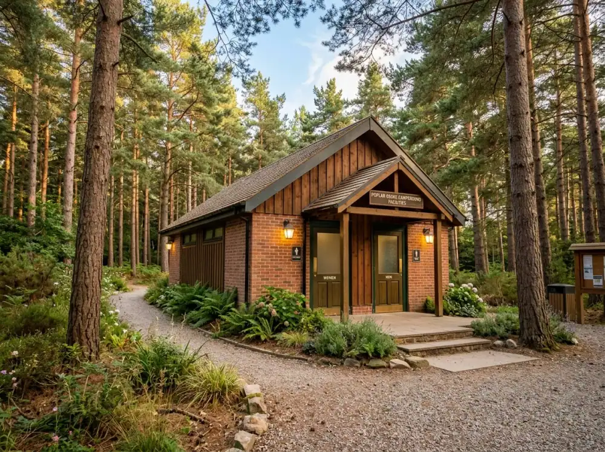

Pernahkah Anda merasa bahwa 24 jam dalam sehari tidak pernah cukup untuk menyelesaikan tumpukan deadline di kantor, hingga akhirnya Anda lupa kapan terakhir kali menghirup udara segar yang bukan berasal dari ventilasi AC gedung?
Rasanya seperti terjebak dalam simulasi yang berulang: bangun pagi, macet-macetan, menatap layar monitor, lalu pulang saat hari sudah gelap. Banyak orang berkata, "Nanti saja liburannya kalau proyek ini selesai," tapi faktanya, proyek baru akan selalu datang dan rasa lelah Anda justru makin menumpuk tanpa kompromi. Jangan sampai Anda mencapai titik burnout total dan baru menyesal ketika kesehatan mental mulai terganggu serta performa melorot tajam.
Membayangkan diri Anda duduk di kursi lipat, menyeruput kopi hangat sambil memandang kabut tipis di antara pohon pinus, sementara pekerjaan tetap bisa terpantau lewat WiFi kencang, bukanlah sebuah dosa produktivitas. Sebelum slot lahan di Batu Sunrise Camp dikuasai oleh mereka yang lebih dulu sadar akan pentingnya work-life balance, ada baiknya Anda segera mengamankan posisi. Jangan sampai akhir pekan depan Anda hanya bisa gigit jari melihat postingan teman yang sedang asyik healing tanpa beban di media sosial.
1. Evolusi Akomodasi: Mengapa Harus Camping di Tahun 2026?
Dulu, tatkala mendengar kata "camping", mungkin yang terlintas di pikiran kita adalah perjuangan membangun tenda di tengah hujan deras, buang air di semak-semak belukar, hingga punggung yang sakit dan persendian ngilu karena tidur hanya beralaskan matras spon di atas akar pohon. Namun, zaman serta ekspektasi traveler sudah berubah.
Di Batu Sunrise Camp, filosofi yang diusung adalah kenyamanan tanpa menghilangkan esensi kedekatan dengan alam liar. Inilah yang kita tawarkan bagi mereka pejuang urban yang haus eksotisme namun ogah menderita.
Konsep Semi-Glamping: Mewah Tapi Tetap Membumi
Jika hotel berbintang adalah "zona nyaman" yang statis dan cenderung steril, maka lokasi ini adalah "kantor kreatif" yang membangkitkan dinamisasi imajinasi. Di sini, Anda ditawarkan bentuk penginapan alternatif yang terasa jauh lebih lega dan bernapas ketimbang sekadar sewaan villa tembok biasa. Opsinya tersebar merata mengcover seluruh segmentasi, mulai dari sewa lahan mandiri seharga Rp50.000 hingga paket eksklusif "terima beres" yang termahal mematok Rp850.000.
Analogi penerapannya sangat sederhana. Persis seperti Anda memilih provider layanan internet harian. Ada tamu yang hanya ingin kuota dasar memadai (Paket Sunrise 1 / Lahan Saja), ada pula yang ingin paket komplit disertai hibah langganan streaming film (Paket Sunrise 3 / Bundling), hingga mereka yang lebih membutuhkan paket korporat prima serba ada dan premium (Paket Exclusive / Glamping VIP). Fleksibilitas kustomisasi inilah yang membuat kaum urban berani dan mantap mulai menggeser minatnya dari hotel konvensional menuju akomodasi alam terbuka yang lebih fresh.
2. Fasilitas Modern: Membawa Kenyamanan Kota ke Area Pegunungan
Salah satu limitasi psikologis terbesar orang-orang kota besar untuk rekreasi ke lereng hutan pegunungan adalah ketakutan akan kehilangan taring konektivitas digital dan runtuhnya pilar kenyamanan dasar. Konsep alam buatan pengelola memetakan betul kerisauan massal pendatang ini. Mereka tidak membiarkan Anda "tersesat" dalam arti yang sebenarnya memutus urat nadi komunikasi.
Konektivitas Digital: WiFi Kencang dan Listrik di Setiap Sudut
Di iklim tata dunia kerja Asia apalagi Indonesia, istilah tugas "urgent" seringkali secara agresif muncul di waktu-waktu penutupan bulan yang tidak terduga, meski itu di kala libur. Terpasangnya fasilitas WiFi gratis secara merata dan jalur port colokan listrik di setiap radius titik tenda adalah sebuah fitur 'tali penyelamat' karir. Anda tetap bisa leluasa mengirimkan revisi draft dokumen bertenggat waktu atau melempar sesi Zoom meeting singkat kepada bos. Tentunya, semua ini Anda lakukan dengan tampilan latar belakang nyata rimbunnya hutan pinus yang mengesankan (bukan layar hijau virtual background instan). Tentu saja, fenomena ini menjadi oase bagi para digital nomad paruh waktu yang berniat liburan seraya tanpa dirusuhi kepanikan memudarnya indikator logistik baterai laptop andalan.
Keamanan dan Pengawasan 24 Jam: Tidur Nyenyak Tanpa Waswas
Acuali ketika kita menggelar camping tradisional tempo dulu di hutan rilis perhutani. Kita senantiasa dibekap khawatir tatkala hendak meninggalkan tas berisi handphone di dalam tenda sekadar kala jalan-jalan berfoto ke sumber mata air terdekat. Di basecamp komersil ini, nyawa dan keamanan properti pelancong merupakan pertaruhan harga diri tata kelola pengurus. Melalui pengawasan petugas patroli siaga keliling 24 jam nonstop berpadu dukungan sistem sensor pantauan kamera CCTV siluman di area lintasan umum strategis, Anda kini bisa berleha-leha meninggalkan ritsleting tenda dengan detak jantung yang tetap reguler. Nuansanya menawarkan sensasi rasa ke-aman-an hakiki yang linier alias setara dengan protokol sekuritas tinggal di kompleks apartemen metropolitan, perbedaannya hanyalah kelimpahan pasokan ventilasi udara embun di sini miliaran kali jauh lebih bersih bagi menenangkan paru-paru Anda.

3. Sanitasi Premium: Jawaban Atas "Trauma" Kamar Mandi Hutan
Mari kita buka-bukaan, hambatan paling klasik mengapa ibu-ibu, wanita, dan sebagian besar penggilai higienitas enggan melakukan kemping ialah isu momok toilet jorok dan seram. Belum lagi tambahan gigitan dingin suhu ekstrem Kota Batu, spesifiknya menyerap masuk di sel-sel wilayah dataran Dusun Gunungsari ini yang teramat efektif membekukan hasrat biologis siapapun untuk sekadar menyentuh gayung genangan air. Namun heninglah sejenak, tim teknisi instalatur Batu Sunrise Camp sangat brilian merumuskan "Jalan Keluar Kemanusiaan" yang paling dinanti: Bilik Shower Air Hangat yang melimpah.
Terapi Air Hangat di Tengah Dinginnya Malam
Seusai menuntaskan jam-jaman maraton perjalanan berkeringat menembus jalan berkelok, ataupun saat baru meregangkan sel-sel otot beku kala subuh pecah, siraman terapi mandi air panas mendadak bertransformasi sedemikian rupa menjadi semacam kemewahan yang tak tersangkal harganya. Toilet umum yang dijamin tak berbau menyengat, dikeramic cemerlang secara layak, diurus terjadwal, serta ditopang kemudahan wastafel air mengalir deras untuk sarana cuci peralatan piring dan gigi, spontanitas merobak reputasi menginap tenda ini meroket setinggi kelayakan singgah sebuah asrama Boutique berkelas. Kini telah tamatlah rekam jejak memori kelam 'kamar mandi hutan gelap horor berdinding terpal bekas dan menjijikkan' dari relung hati Anda. Ini bukan perbaikan melainkan standar normal baru (new normal) mutlak bagi lanskap kemajuan wisata luar ruang yang inklusif mengangkat derajat tamu seluruh segmentasi maupun usia belia.
4. Wisata Edukasi & Keluarga: Membangun Karakter di Alam Terbuka
Bagi Anda sekalian pasangan-pasangan milenial berputra, memandu balita mengeksekusi trip ke pedalaman alam terbuka bukan lagi soal menghitung dana bensin, melainkan pertarungan logistik serta kompresi emosi kesabaran orangtua. Akan tetapi kontras realitanya di kota, bilamana rutinitas kita hanya sanggup membelenggu si Buyung bermain dari satu pelataran lantau mall ke pelataran arkade digital ber-AC lain tiap akhir pulangnya, sesungguhnya ini tak beda jauh dengan sabotase tumbuh kembang saraf sensorik mereka.
Keamanan Area untuk Balita dan Lansia
Kontur luasan tanah topografi situs Batu Sunrise Camp di titik punggungan blok Goa Pinus ini tercatat amat istimewa berkat relatif stabilitas tingkat cekungan medannya yang cenderung landai tak bereisko dan telah rapi distruktur menggunakan trap undakan-undakan ramah kaki. Masterplan pembangunan sengaja mematok pembagian zonasi plot aman anti jurang agar balita sanggup girang berlarian merdeka menyalurkan ledakan endorfinnya, bahkan ramah dan empuk buat dengkul tetamu paruh baya alias lansia sekalian. Praktek lapangan untuk bebas leluasa mencelupkan jemari mungil memegang liatnya tekstur tanah pagi, meresapnya aroma wangi terpentin pohon cemara hutan, mengejar capung liar, plus menikmati gemeretak simfoni ranting patah terjilat api unggun hakikatnya wujud absolut pedoman pembelajaran edukasi kognitif balita secara konkret—sebuah pelajaran bernilai emas yang seumur-umur mustahil ditarik manfaatnya semata-mata dari tebaran pendar radiasi monitor iPad canggih milik mereka.
Kebijakan Ramah Hewan Peliharaan (Pet-Friendly)
Bergeser menilik ikatan di tataran anggota keluarga modern saat ini, peliharaan anak bulu entah gukguk lucu jenis corgi maupun ras kucing peaknose gemuk kesayangan sering kali resmi merangkap status krusial menjadi layaknya penyeimbang kebahagiaan mental tuan manusianya. Adalah petualangan penuh dilema memilukan bilamana terpaksa mengekang, lantas meninggalkannya terkunci membusan di sangkar kos atau terasing di pet-hotel. Terbukanya keran regulasi pelonggaran izin Pet-friendly di ekosistem kemah ini mencuatkan bukti otentik komitmen apresiasi respek penyelenggara atas jalinan mutualis tak kasap mata antar kita umat manusia beserta rekanan binatang perawat jiwanya tersebut. Tontonan damai menatap sahabat berkaki empat kesayangan itu puas asyik melompat tak terikat meresapi belaian kesejukan ambalan rumput hijau pasti akan melengkapi pundi-pundi asupan kepuasan liburan spiritual kejiwaan terdalam siapapun si pengadopsinya di masa kini.
5. Destinasi Berbasis Pemandangan: Sunrise dan City Light Sebagai 'Self-Reward'
Terkadang fasilitas bisa dibeli dengan modal triliunan beton pencakar langit. Tetapi hak paten pertunjukkan teater geografi alamiah agung, segenap panorama cakrawala tersebut sepenuhnya di luar kendali manuver investasi campur tangan teknologi. Justifikasi tertinggi Anda wajib melampaui rutinitas pelesiran kota dan bersandar ke mari terletak mantap pada paket atraksi eksklusif bonus fajar maupun gempita biasan malam ganda yang mencengangkan ritme degup jantung.
Berburu Sunrise: Momen Emas yang Menghilangkan Stres
Terbitnya irisan piringan rembulan atau sang Surya tidak sekadar direduksi bagai fenomena kebetulan rotasi tata astronomi belaka, nyatanya bagi mayoritas khalayak awam pelarian, bias sinar perdana tersebut merupakan metafora terkuat bagi lembaran simbolis harapan bersih awal nan baru. Ketika netra terpejam lelap subuh dan kelopak mengernyit seiring irama usapan embun sejuk di atas hamparan selimut kantung tidur, Anda cukup menyingkap bilah resleting ganda tenda tanpa perlu repot mencuci muka terlebih hulu. Di sepersekian detik berikutnya terpaan langsung lautan gumpalan ombak awan di sela pegunungan dihiasi sentuhan oles pita semburat kemerahan di ujung cakrawala membelah dingin, langsung mendarat hangat menusuk hingga ke syaraf-syaraf retina, me-restart amarah dendam emosi secara cuma-cuma bak siraman terapi mental akupuntur supranatural bertempo cepat. Anda lunas tak perlu lagi meregang urat mengocok dengkul menanjaki track miring berbahaya mendaki kordinat puncak yang sulit demi mendulang keanggunannya, pasalnya galeri estetika alamiah tersebut dibentangkan alam tepat dalam pangkuan selemparan batu di teras tenda peristirahat diri.
Romantisme City Light Malang Raya
Adapun seusai layar biru pudar menjemput pergantian sif ke petang hitam berhiaskan semburan galaksi bimasakti, pentas suguhan estetika lekas dialihkan rupa melukis taburan tebaran intan cahaya buatan—pijar kehidupan metropolis raya Kota Malang nan memancar merobek gelap mendominasi lanskap lembah di tapal batas ketinggian daratan curam nan lengang sana. Detik magis malam menjelang larut tersebut sungguh merupakan momen pengakuan terindah merekonstruksi hangat intimasi bersama si kekasih kalbu tercinta, atau sahabat-sejawat setongkrongan sambil menumpangi kepungan nyala barap-biru percikan api unggun abadi sembari membincangkan kelakar guyonan random absurd hal-hal lepas selain berkutat beban berat masalah tumpukan piutang omzet pekerjaan di meja korporasi harian. Kondisi magis pengasingan tenang tersebut nyata mempercepat fusi senyawa katalis peredam kerikuhan, membentuk dinding emosional transparan penyatuan sejati yang rasanya sulit sekali diperjuangkan manakala disekap hiruk-pikuk lalu lintas dan kemelut riuh rendah distorsi bar-kafe bising di pusaran sumpek hiruk kotamadya sana.
6. Sisi Konsumsi: Kafe & Resto yang Menyelamatkan Perut
Lalu lintas jagat sosial di luar sana sering mengindoktrinasikan paham bahwa parameter keberhasilan petualang alam itu dilihat lurus setara dengan kemampuannya menanak sepanci nasi lengket keras, sambil membungkuk mengatur laju sirkulasi kompor nesting gas angin ringkih berteman mie telor basah. Buang prinsip konyol merepotkan tersebut dari benak sekarang juga. Tidak semua jiwa raga ini mewarisi sabuk bakat seni kuliner pertahanan diri hutan rimba dari buyut moyang. Silakan peluk kemauan realistis kemalasan murni bila dirasa sedang mendamba opsi kepraktisan hakiki. Terbukanya pintu operasional Cafe & Resto terintegrasi di batas pinggir tapak kemahan jelas adalah jawaban laksana taburan mukjizat rintik hujan di tengah savana gersang kalori perut. Suguhan aneka asupan daftar purna menu, berupa masakan khas menghangatkan rahang mulut kedinginan diracik segar plus bonus harga pas bandrol ramah turis standar domestik (tidak seperti mitos kutukan kawasan obyek "getok harga nembak" turis siluman). Seluruh elemen logistik tersebut otomatis menaikkan jenjang bobot nilai total skor keberserahan liburan seratus kali lipat lebih membahagiakan. Tinggal comot, seruput asyik menyecap sosis bakar maupun mangkuk mie kental instan sembari memanggang telapak paha di teritori khusus sentral titik nyala api lingkar kawan kolega sejawat rombongan yang telah dipersiapkan cermat tata pengelola lahan kemping asri itu.
7. Tips Tambahan Agar Liburan Tidak Berujung Penyesalan
Terlepas dari gemerlap kemudahan yang menaungi fasilitas kemah tersebut, Anda wajib mawas diri mengingat bentang lokasinya bertengger kukuh di tengah kawasan puncak ekstrem bukit dataran gunung berlimpah embusan cuaca anomali berkabit sejuk dingin konstan, ada sejumlah piranti teknis mutlak yang sangat direkomendasikan siaga untuk digerek demi mengeruk poin pengalaman menginap pamungkas yang mendekati kata paripurna ideal :
- Garda Pelindung Jaket Super Tebal adalah Absolut Kewajiban: Jangan terlalu pongah mencemooh sepinya angin siang tatkala fajar dingin bersiap memperkosa sumsum tulang di petang esok harinya. Mengandalkan belasan derajat fluktuasi malam kawasan Batu pastilah dapat merosot brutal merampas sisa imun Anda, oleh sebab pelengkap armor insulasi pakaian parka berbahan rajut lapis pelindung musim winter mutlak didahulukan di lapis paking barang punggung sedari awal hari mendarat.
- Stasiun Penambatan Daya Elektrik via Kabel Reksa Roll Salur Tambahan: Walau fakta berbicara jujur mengonfirmasi hadirnya sambungan titik daya listrik eksis bercokol di bilik kavling tenda kemah, dengan niatan mereparasi keteraturan tumpang tindih belasan unit perangkat portabel elektronik kolektif para pengunjung, membawa bekal jatah kabel colokan perpanjang ekstensor sanggup menjadi inisiator terwaras demi menjamin kelenturan penempatan sirkuit pos pendaratan asupan stroom pada ujung tenda dengan tata ruang visual lebih ergonomis di malam yang lelap.
- Jaminan Stempel Status Reservasi Valid Berminggu-minggu Awal (Tidak Dadakan): Anggaplah pasal yang terakhir ini menempati titah paling primer mutlak tiada ampun negosiasi. Animo eksodus pelancong melarikan diri mencari hawa puncak ke klaster dataran Sunrise ini tak main-main derasnya dan lahan serapan hunian bertenda kemah sifat kuotanya sungguh rentan gampang tergerus sangat ringkas ludesnya. Lebih nahas bilamana Anda menyerobot paksa di hari krusial masa liburan meratapi high/peak seasons maupun long weekend nasional. Mencegah tangis dramatis patah hati ketika tiba-tiba diperintahkan satpam di palang pintu untuk putar arah, memprakarsai negosiasi kesepakatan pemesanan konfirmasi lewat nomor admin WhatsApp aktif mereka yakni 0812-3922-5692 adalah harga kedaulatan kepastian hidup wajib yang tak dapat ditawar jika sungguh menghindari pedih ambyar kepahitan mimpi buruk lahan tertutup bertanda penuh (fully-booked) mendesak.
Penutup: Saatnya Memberi Ruang untuk Bernapas
Kini tiba di momen epik menginjak batas simpulan bahwasanya esensi hakikat siklus hidup itu bukanlah berakar dari pacuan tanpa koma mengeruk prestasi serakah merajai deret target target angka finansial di grafik KPI bulanan segenap kalender korporasi di tembok, seraya menebar fatamorgana kehebatan label mentereng kedudukan posisi piramida level di gedung perkantoran elit belaka. Adakalanya sungguh mendesak jiwa rapuh sanubari terdalam manusia disadarkan guna mematikan roda mesin sekilas waktu. Melepaskan setelan baju kebesaran kerah kaku jas parlente berbelit simpul tali dasi norak atau setelan mahkota sepatu pergelangan kaki runcing stiletto demi bergulir pasrah merabai dan menyesap aliran murni persinggungan urat telapak sel bumi gambut di atas bongkah lumpur hijau segar nyata yang hakiki.
Ritual melonggarkan kendali katup penat sejenak tak lain bagaikan menyetorkan injeksi pelumas nafas pemulihan, supaya badan pikiran fana engkau nan kian layu lunglai itu enggan tiba-tiba merosot amblas mogok bertingkah seperti ringkisan onggokan mesin dinamo robot reot terkapar parah minus daya recharger baterainya di gudang pembuangan rongsok berdebu. Tawarannya sungguh tak menuntut Anda membobol reksadana, Batu Sunrise Camp dengan hangat membuka keistimewaan tak bersyarat, meramu kemewahan bersahaja dengan resep ramuan pas di sirkulasi sirkadian oksigen bersih, diapit tontonan bingkai surga dan instalasi ragam pelengkap piranti buatan mumpuni yang memudahkan laku liburan di semesta raya yang asyik. Oleh karenanya seletih-letihnya mengeluh, pantang membiarkan pecahan menit-menit yang kian tersita terus menggilas durasi umur berharga tak dapat diundurkan menyusut berlalu meratapi hari di depan layar-cahaya kotak. Alam sesungguhnya paling andal menyembur ramuan mantra penenang lelah di titik-titik urat syaraf depresi letih paling rahasia yang mungkin kunci terapinya sedang lama memanggilmu bernaung di rimbun deretan lekuk hutan pepohonan pinus terpencil Dusun Gunungsari sekalian. Tak usah canggung beralasan sungkan untuk menyegerakan janji, hingga pertemuan manis esok menyambut ceria hangat sorot rona semburat pesona jingga berkobar meliuk syahdu di pergelangan lengan lingkar api unggun abadi sana. Lekas kemasi tas dan sampai sapa di dataran langit!
8. FAQ Relevan dengan Topik
Adiel Ebert Nakula Shandy
Senior Outdoor Enthusiast & Web Developer. Penggemar aktivitas alam dan kuliner camping.